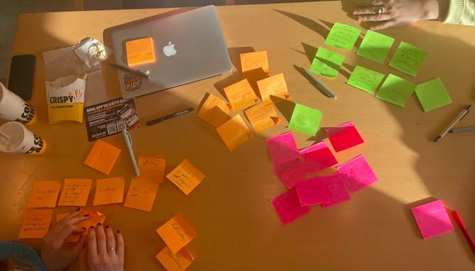
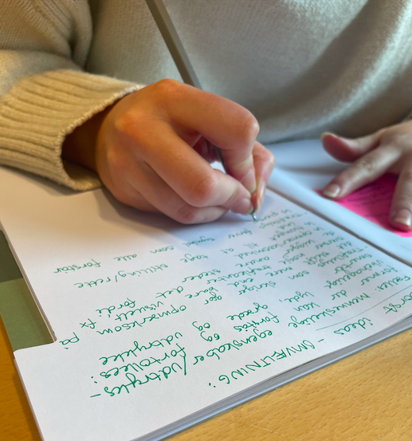
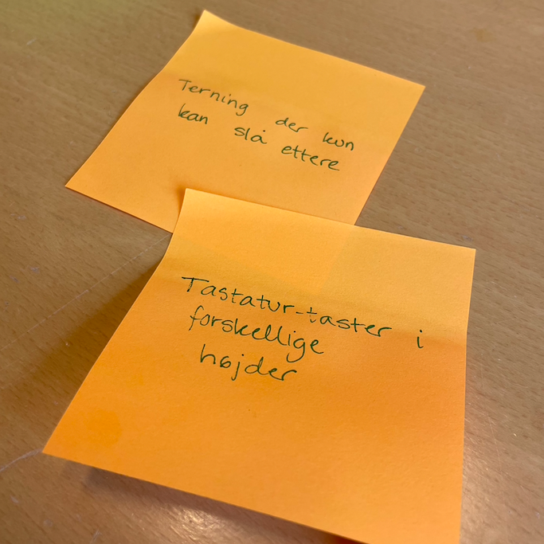

Ideation
We've made two seperate ideation-processes. This page will include both; the first time we iderated, we did so to choose the topic of our project and the second for choosing the concept of the topic.
First ideation
 We started brainstorming as we needed pretty quickly to find out a specific topic we wanted to work with, to move forward in our proces. As the overall topic of the designproject was given to us, we started out from there. It was "surveillance and care". We brainstormed individually for 5 minutes each and then talked all of our ideas through, as there were many.
We used multi-dot voting to narrow down our ideas. We ended up with three ideas which we chose to explore and research just for about 15 min for each idea. With this, we just wanted to have a little bit of an overview about each idea, and if it actually would make sense for us to choose one of these ideas for a topic. When we had done that, we settled upon children and bullying - we were all agreeing that this was the most meaningful for us to work with.
We also thought it would be exiting and interesting to connect with "surveillance and care".
After this first ideation we were ready to start researching more upon this area before doing our second ideation for choosing concept. If you haven't read about our research proces, you can do so here.
Second ideation - choosing concept
After choosing our overall topic, that was a little more narrowed down than "surveillance and care", we were now ready to chose our designconcept and figure our the HOW and WHAT in our designchallenge.

WHAT? + HOW? ➞ VALUE (better well-being for children)We started by doing a 5 minute rapid ideation to kick-start our flow of thinking. We then did a worst idea and switched up our ideas with eachother before talking about all of the different ideas we now had generated. To make a decision about exactly what concept we wanted we used the multi-dot voting again. We did this several times as we had a lot of different ideas after the ideation. In the end we stood between two ideas, and we then agreed upon the concept being a game - what kind of game we didn't know yet, but to figure this out was our next step in the proces.
Personally, this ideation i used a random word generator to help the ideation proces by doing some kinds of associations with the random word the online generator was giving me and the bad idea i'd gotten from one groupmember. I did this when i could not think of any more ideas and it made me think in a different direction and sparked some more ideas that was useful. I would probably try to do something likewise, when i'm doing an ideation again.
To sum up
We settled on:A concept based on gamification; whether it be a computergame, a platform that can be accessed from a browser or a digital/physical boardgame.Methods we have used, includes:
It should be multiplayer and require collaboration, positive action and possibly information/education through games.
- Rapid ideation
- Multi-dot voting
- Worst ideas
- CST: randomwordgenerator.com